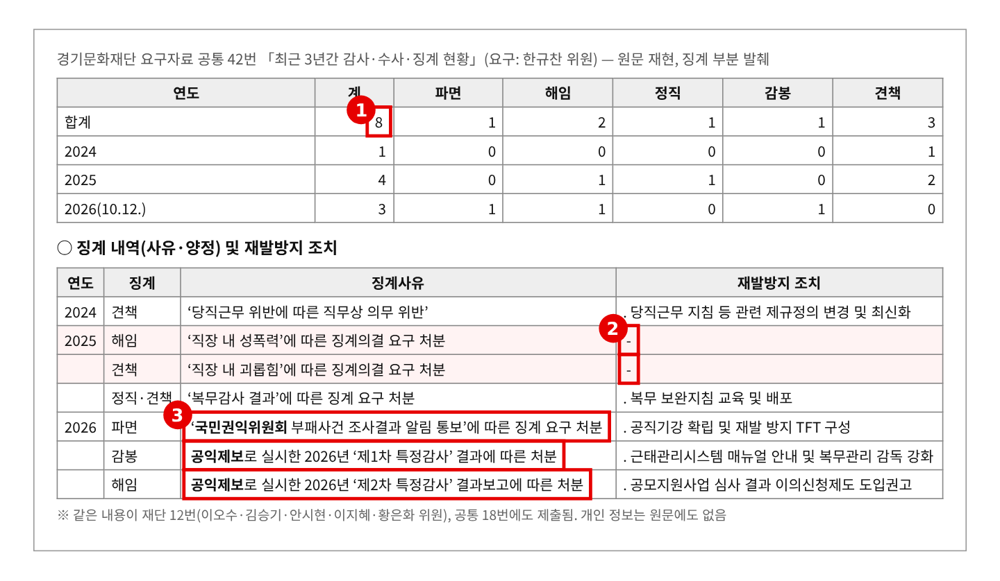
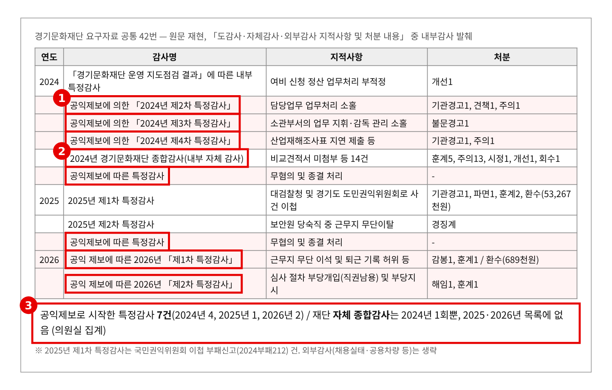
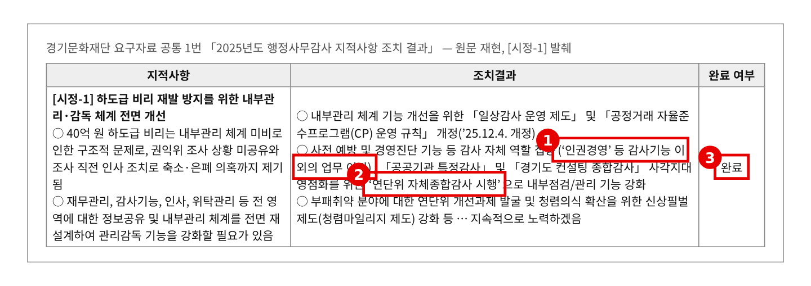
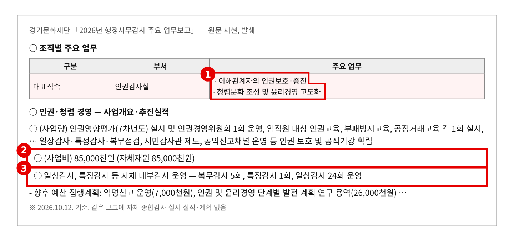
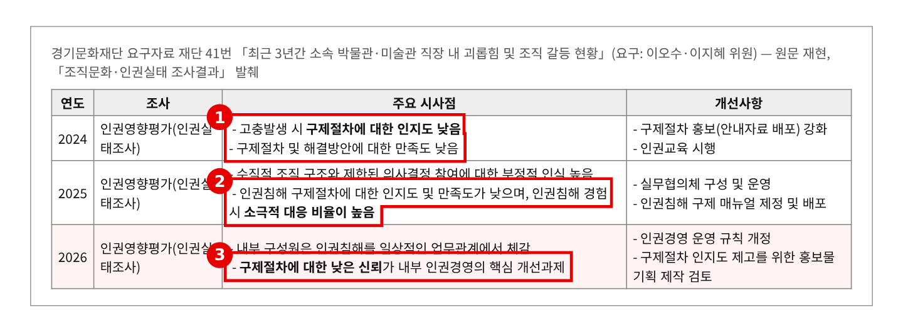
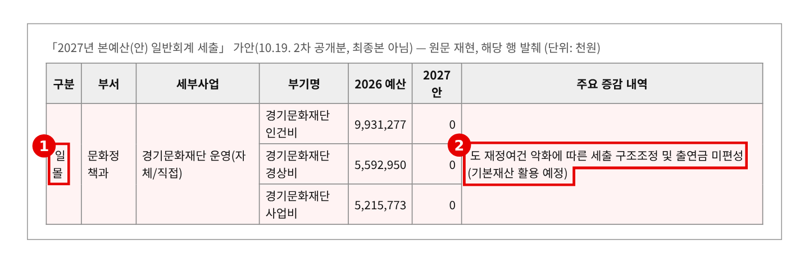

2026년 행정사무감사 질의서 (발언용 · 5분) — 기관 1일차
경기문화재단, 비위는 늘 밖에서 먼저 찾았다
— 공익제보 특정감사 7건, 약속한 자체 종합감사는 없었다
문화체육관광위원회 황은화 위원 → 경기문화재단 대표이사(인권감사실)
| ① 비위는 늘 밖에서 찾았다 | 3년 징계 8건(파면1·해임2). 파면은 국민권익위원회, 감봉·해임은 공익제보 특정감사 → 공익제보 특정감사 7건 vs 재단 자체 종합감사는 2024년 1회뿐 |
| ② 작년 약속, “완료”라더니 | 2025 행감 [시정-1] 조치: "연단위 자체종합감사 시행", "인권경영 등 감사 외 업무 이관" → 완료 → 2026년 감사 실적에 종합감사 없음, 인권감사실은 여전히 인권경영 담당 |
| ③ 직원은 내부 통로를 믿지 않는다 | 인권실태조사 3년 연속 "구제절차 인지도·신뢰 낮음", 성폭력·괴롭힘 재발방지 칸 "-" → 감사·청렴 예산 8,500만 원은 전액 자체재원, 2027년 출연금은 0원 |
※ 의원실 메모 (발언 제외) · 중복 위험이 가장 큰 주제다. 재단 39번(2026 특정감사)은 이진형·이병숙 위원, 공통 42번(감사·수사·징계)은 한규찬 위원, 재단 41번(괴롭힘)은 이오수·이지혜 위원, 재단 12번·공통 18번(징계)은 이오수·김승기·안시현·이지혜 위원 등이 요구했다. 권익위 사건 경위, 특정감사 세부, 괴롭힘 건수는 앞 순서에서 나올 가능성이 크다. · 그래서 이 질의는 재단 감사기구가 스스로 작동하는가 하나로 좁힌다. 핵심 무기는 [시정-1]의 "연단위 자체종합감사" 약속과 2026년 실적의 불일치다. 앞 질의에서 같은 내용이 나왔다면 질문 2·3만 쓴다. · 집행부 1일차(11.6.) 문화정책과 질의(도의 감독, 출연금 0원·기본재산)와 겹치지 않게, 이번에는 재단 대표이사에게 재단 내부통제를 묻는다. 개인 신상과 사건 세부는 다루지 않는다. · "종합감사가 없다"는 공통 42번 목록과 업무보고(10.12.) 기준이다. "제출 자료에 없다"고 말하고, 실시 여부를 묻는다. |
※ 발언 중 [근거 n] 표시는 맨 뒤 「근거자료」 번호입니다.
■ 발언 — 도입
대표이사님, 재단의 내부통제에 대해 묻겠습니다.
최근 3년간 직원 징계는 8건입니다. 파면 1건, 해임 2건입니다. 오늘 개별 사건과 직원 신상은 묻지 않겠습니다. 재단의 감사 체계가 스스로 작동하는지, 그것 하나를 확인하겠습니다. [근거 1]
▶ 질문 1. 비위는 늘 밖에서 먼저 찾았습니다
올해 징계 세 건을 보겠습니다. 파면은 국민권익위원회 통보로 시작됐습니다. 감봉과 해임은 공익제보로 시작한 특정감사에서 나왔습니다. [근거 1]
3년 치 감사 목록을 보면 더 분명합니다. 공익제보로 시작한 특정감사가 7건입니다. 2024년 4건, 2025년 1건, 올해 2건입니다. [근거 2]
반면 재단이 계획을 세워 스스로 들여다본 자체 종합감사는 2024년 한 번입니다. 지적은 비교견적서 미첨부 같은 서류 문제였습니다. 2025년과 올해 목록에는 종합감사가 없습니다. [근거 2]
대표이사님, 지난 3년간 재단 감사가 제보 없이 스스로 찾아낸 중대한 비위가 한 건이라도 있습니까?
▷ "공익제보 채널이 잘 작동한 결과다"
→ 제보 채널은 마지막 안전망입니다. 직원이 위험을 감수하고 알려야 드러나는 구조라면, 감사가 먼저 움직이지 않은 것입니다. 제보가 없었다면 이 비위들은 지금도 묻혀 있었을 것입니다.
▷ "일상감사 24회, 복무감사 5회를 했다"
→ 일상감사는 결재 전 서류 검토입니다. 올해 징계 사유인 용역 부당 수행, 심사 부당개입은 서류 검토로 걸러지지 않습니다. 사업과 계약을 통째로 보는 종합감사가 필요한 이유입니다. [근거 4]
▶ 질문 2. 작년 약속은 “완료”였습니다
작년 이 자리에서 위원회는 [시정-1] "내부관리·감독 체계 전면 개선"을 요구했습니다. 재단이 낸 조치결과입니다. 감사는 감사에 집중하도록 "인권경영 등 감사기능 이외의 업무를 이관"하고, "연단위 자체종합감사를 시행"하겠다고 했습니다. 그리고 "완료"라고 적었습니다. [근거 3]
올해 업무보고를 보겠습니다. 인권감사실의 업무는 여전히 "인권보호·증진, 청렴문화 조성"입니다. 인권영향평가, 인권교육, 인권경영위원회도 인권감사실이 했습니다. 올해 감사 실적은 복무감사 5회, 특정감사 1회, 일상감사 24회입니다. 종합감사는 없습니다. [근거 4]
약속한 두 가지가 모두 보이지 않는데 "완료"입니다. 그사이 공익제보로 특정감사가 두 번 열렸고, 감봉과 해임이 나왔습니다. [근거 1] [근거 3]
대표이사님, 올해 자체 종합감사를 했습니까? 인권경영 업무는 어디로 이관했습니까? 무엇을 보고 “완료”라고 했습니까?
▷ "규칙 개정을 마쳐 완료로 보고했다"
→ 규칙을 고친 것은 시작입니다. 위원회가 요구한 것은 감사가 실제로 달라지는 것입니다. 올해 종합감사를 안 했다면 "완료"를 "추진 중"으로 정정하고, 2027년 종합감사 계획을 내 주십시오. [근거 3]
▷ "11월 이후 종합감사를 할 예정이다"
→ 그렇다면 대상 부서, 기간, 범위를 담은 감사계획서를 감사 기간 안에 제출해 주십시오. 특히 용역·위탁·공모 심사 분야가 들어가야 합니다. 올해 징계가 모두 그 분야에서 나왔습니다. [근거 1]
▶ 질문 3. 직원은 내부 통로를 믿지 않습니다
왜 비위가 밖으로 먼저 나갈까요. 재단이 직접 한 인권실태조사에 답이 있습니다. 2024년 "구제절차 인지도 낮음", 2025년 "인권침해 경험 시 소극적 대응 비율이 높음", 올해 "구제절차에 대한 낮은 신뢰가 핵심 개선과제". 3년 연속 같은 결론입니다. [근거 5]
징계 자료도 같은 말을 합니다. 2025년 직장 내 성폭력 해임, 괴롭힘 견책의 재발방지 조치 칸은 "-", 비어 있습니다. [근거 1]
이 일을 맡은 인권감사실 예산은 8,500만 원, 전액 자체재원입니다. 익명신고 운영비는 700만 원입니다. 그리고 2027년 예산안에서 재단 출연금은 0원, 기본재산으로 버텨야 합니다. 살림이 어려워지면 가장 먼저 줄어드는 것이 이런 예산입니다. [근거 4] [근거 6]
대표이사님, 직원이 안심하고 안에서 먼저 말할 수 있도록 무엇을 바꾸겠습니까? 공익제보자는 어떻게 보호했습니까?
▷ "구제 매뉴얼을 만들고 홍보물을 제작하겠다"
→ 매뉴얼과 홍보는 2024년부터 해 왔습니다. 그래도 신뢰는 오르지 않았습니다. 문제는 알리는 것이 아니라 믿게 하는 것입니다. 제보자 신분 보호와 불이익 여부 점검 결과, 외부 독립 조사 절차를 제시해 주십시오. [근거 5]
▷ "출연금이 없어도 감사·청렴 예산은 유지하겠다"
→ 그 약속을 숫자로 받아 두겠습니다. 2027년 인권감사실 예산과 인력, 종합감사·익명신고 예산을 본예산 심사 전에 보고해 주십시오. [근거 6]
■ 마무리 · 요구사항
대표이사님, 비위를 밖에서 먼저 찾는 조직은 도민의 신뢰도 밖에서 먼저 잃습니다. 공익제보는 고마운 일이지만, 감사가 제보를 기다려서는 안 됩니다. 작년의 약속을 올해 지키지 않았다면, 내년에는 반드시 지켜야 합니다. 끝까지 지켜보겠습니다.
하나, 2025년 행정사무감사 [시정-1]의 실제 이행 결과(2026년 자체 종합감사 실시 여부, 인권경영 업무 이관 여부, "완료" 판단 근거)를 감사 종료 전까지 제출하고, 미이행 항목은 "추진 중"으로 정정해 주십시오. 용역·위탁·공모 심사 분야를 포함한 2027년 자체 종합감사 계획은 2026년 12월까지 보고해 주십시오.
둘, 직장 내 성폭력·괴롭힘 재발방지 대책과 공익제보자 보호조치 현황(신분 보호, 불이익 여부 점검), 내부 구제절차 신뢰 회복 방안을 2027년 2월까지 보고해 주십시오.
셋, 공직기강 확립 TFT의 회의 결과와 이행 점검표를 감사 종료 전까지 제출하고, 출연금 미편성 상황에서 2027년 감사·청렴 예산과 인력 유지 계획을 2027년 본예산 상임위 심사 전까지 보고해 주십시오.
■ 참고 · 감사 중 추가 요구자료
· 2024~2026년 연간 자체감사 계획서와 실시 결과(종합·특정·복무·일상 구분)
· 특정감사 결과보고서 — 개인정보 제외, 지적사항·제도개선 권고와 이행 여부 중심
· 공익제보 접수·처리 현황(접수 경로별)과 제보자 보호조치 내역(신분 노출·불이익 여부)
· 공직기강 확립 및 재발 방지 TFT 구성·회의록·이행 점검표
· 인권감사실 정원·현원과 업무분장(감사 업무와 인권경영 업무 구분)
근 거 자 료
빨간 상자·번호는 발언에서 짚는 부분입니다. "원문 재현"은 한글·마크다운·엑셀 원문을 그대로 옮긴 것이며, 개인 성명·신상은 원문에도 없거나 싣지 않았습니다.
▶ 질문 1 관련
근거 1. 최근 3년 징계 현황 · 사유 · 재발방지 조치 
※ 출처: 경기문화재단 2026년 행정사무감사 요구자료 공통 42번 「최근 3년간 감사·수사·징계 현황」(인권감사실·인사팀) (원문 재현, 발췌). 같은 내용이 재단 12번·공통 18번에도 제출됨 |
근거 2. 3년간 내부감사 목록 — 공익제보 특정감사 7건, 종합감사 1회 
※ 출처: 경기문화재단 2026년 행정사무감사 요구자료 공통 42번 「최근 3년간 감사·수사·징계 현황」(인권감사실·인사팀) 「도감사·자체감사·외부감사 지적사항 및 처분 내용」 (원문 재현, 내부감사 발췌) |
▶ 질문 2 관련
근거 3. 2025년 행정사무감사 [시정-1] 조치결과 — "완료" 
※ 출처: 경기문화재단 2026년 행정사무감사 요구자료 공통 1번 「2025년도 행정사무감사 지적사항 조치 결과」(경영기획팀) (원문 재현, 발췌) |
근거 4. 2026년 업무보고 — 인권감사실 업무 · 감사 실적 · 예산 
※ 출처: 경기문화재단 「2026년 행정사무감사 주요 업무보고」 조직별 주요 업무, 「인권·청렴 경영」 (2026.10.12. 기준) (원문 재현, 발췌) |
▶ 질문 3 관련
근거 5. 인권실태조사 3년 — "구제절차 신뢰 낮음" 
※ 출처: 경기문화재단 2026년 행정사무감사 요구자료 재단 41번 「최근 3년간 소속 박물관·미술관 직장 내 괴롭힘 및 조직 갈등 현황」 (원문 재현, 발췌) |
근거 6. 2027년 본예산(안) — 재단 출연금 전액 미편성 
※ 출처: 「2027년 본예산(안) 일반회계 세출」 가안(10.19. 2차 공개분, 최종본 아님) (원문 재현, 발췌) |